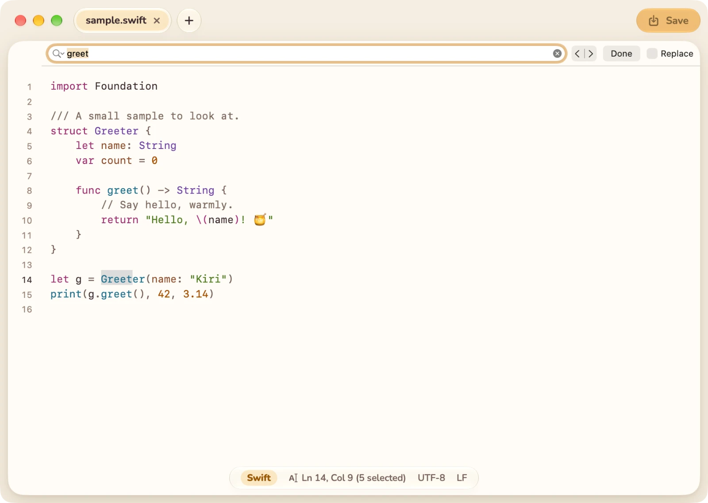
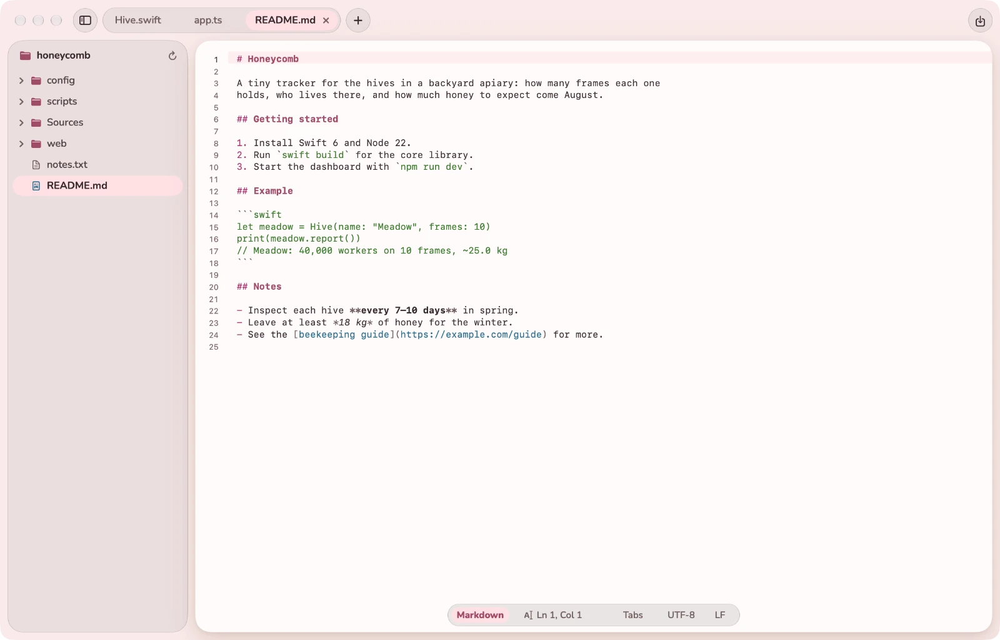
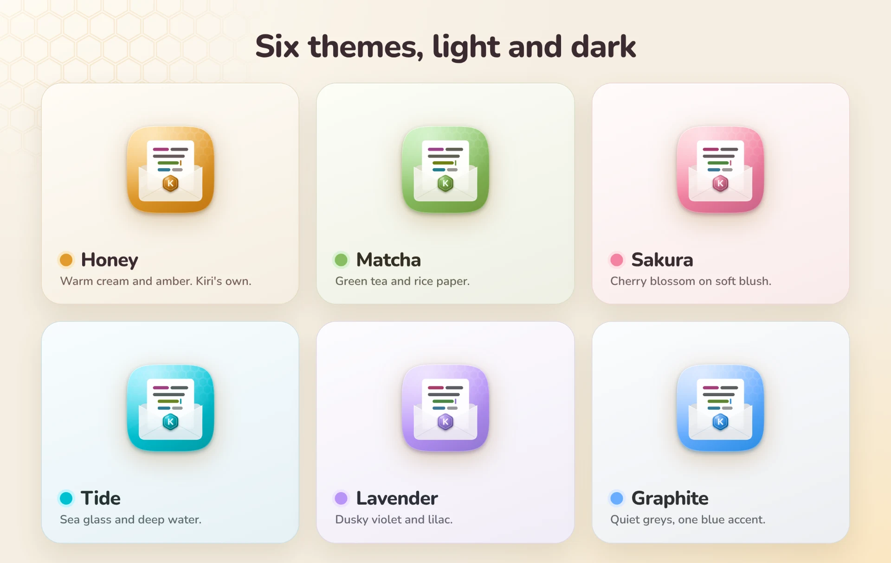

Instant launch
About a third of a second to the first window on an M-series Mac. Kiri is ready before you are.
Kiri is a native Mac app that opens in an instant, reads the files you reach for every day and colors their code. Open a file, make the change, get back to work.
Free · macOS 26 Tahoe or later · Apple silicon and Intel

Everything a quick edit needs, nothing that slows it down.
About a third of a second to the first window on an M-series Mac. Kiri is ready before you are.
Glass chrome over warm paper, the text on a solid panel. Light, dark and high contrast, and it follows Reduce Motion and Reduce Transparency.
Tree-sitter for Swift, TypeScript, Python, Go, Rust, Kotlin, C, C++, Zig and more. Only the visible text is colored, so big files stay fast.
Documents open as tabs in one window. Open a folder for a file sidebar with a preview tab, so looking through files leaves one tab, not twenty.
⌘K finds a file in the folder, another tab, a recent file or any menu command by a few of its letters. ⌘L goes to a line.
Your file changes when you save, never otherwise. A recovery copy kept out of your folders brings unsaved work back after a crash.
Markdown, JSON, YAML, TOML, CSV, logs and source code. Encoding and line endings are detected and saved back exactly as they were.
Signed and notarized by Apple, with a built-in updater that installs new versions when you say so.
The command palette floats over your text: “grsw” finds Greeter.swift, “tc” runs Toggle Comment. Every menu command is in it, with its shortcut, so it is also where you look a key up.

A glass bar over the top of the editor, matches highlighted as you type with a count. Match case, regular expressions with $1 replacements, and Replace All as one undo step.

Markdown headings, lists and code blocks are colored as you write. A status bar of glass shows the language, encoding and line endings, and fades while you type.

Each one recolors every surface and every syntax color. Even the Dock icon follows along.
Warm cream and amber. Kiri's own.

Install the kiri command from the Kiri menu once, then open files, folders and pipes from anywhere. It reuses the running app, so it is instant too.
Make it your editor for git and everything else with export EDITOR="kiri -w".
# open files as tabs
$ kiri notes.md todo.txt
# …at line 42, column 5
$ kiri src/main.swift:42:5
# a window with a file sidebar
$ kiri ~/project
# standard input in a new tab
$ git diff | kiri -
# wait until the tab is closed
$ git config --global core.editor "kiri -w"Download the disk image, open it and drag Kiri into Applications.
Free · macOS 26 Tahoe or later · Universal (Apple silicon and Intel)